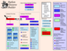

| Developer's Documentation |  |
On the other hand, we have to have FIVE localization files working together to accomplish this feat. The first THREE are within the game ENGINE, and can be summed up by saying that "a PUB ENGINE localization is available for your language". If you are trying to localize a game, therefore, you must first make sure that an engine locale exists that you can use. You do not strictly have to insist on a perfect match -- you could use a similar engine locale, and operate in a "mixed locale" mode. Even so, however, you will have to pick the engine locale to use with your game locale.
The remaining two files are specific to the game, and consist of:
If you need to localize the game engine first, please see the PUB Localization notes.